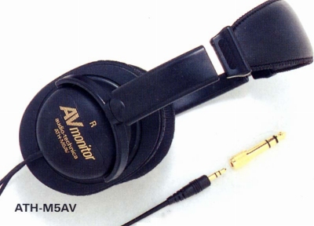

ATH-M5AV

■価格 6,800円■型式 ダイナミック型密閉タイプ■振動板 ■インピーダンス 40Ω■再生周波数帯域 5-25,000Hz■許容入力 1,000mW■感度 100ｄB/mW■コード 5.5ｍ ステレオ3.5/6.3mmプラグ■重量 182g（コード含まず）■発売 1989年7月■販売終了 1990〜91年頃■備考 コードの長さ以外はATH-M5と同じ
テクニカのインデックスへ